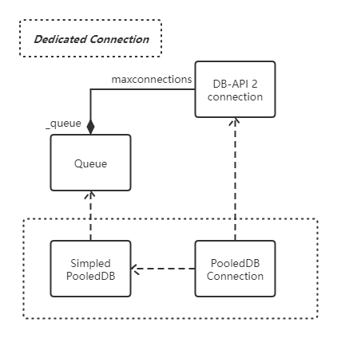
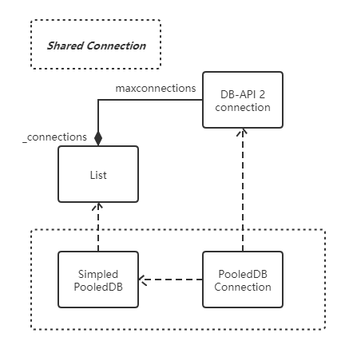
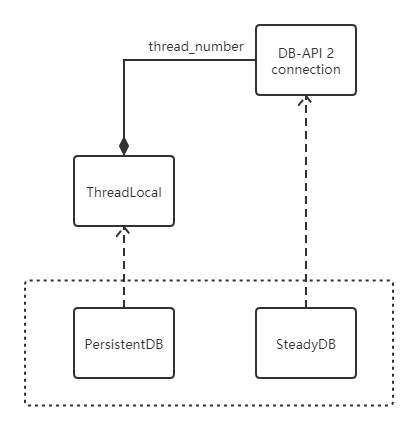
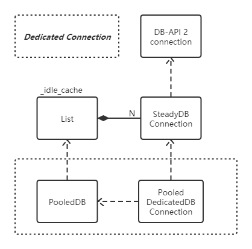

一、概述
DBUtils 支持符合 DB-API 2 的数据库接口和 PyGreSQL API 接口。
二、DB-API 2
DB-API 2 就是满足 PEP 249 规范的模块。PEP 249 规范描述了模块：
- 如何生成数据库连接和游标
- 数据库连接和游标对象的接口
- 模块全局变量
- 其他扩展
PEP 249 提供的重要约束：
模块接口
- 创建连接
1
cnx = connect( parameters... )
- 创建连接
模块变量
- apilevel, 表示 dbapi 级别：
"1.0"，模块 DB-API 满足 PEP 248 规范。"2.0"，模块 DB-API 满足 PEP 249 规范。
threadsafety，表示模块和相关对象的线程安全级别：
threadsafety|Meaning
-|-
0|module（DB-API 2 模块）无法在多个线程间共享。
1|module 可以多线程之间共享，connection （数据库连接）不能在多个线程之间共享。
2|module 和 connection 都能在多个线程间共享。
3|module、connection 和 cursor（数据库游标）可以在多个线程间共享。paramstyle，模块接口期望的参数标记(parameter marker)的格式化风格
paramstyle|Meaning
-|-
qmark|Question mark style, e.g. …WHERE name=?
numeric|Numeric, positional style, e.g. …WHERE name=:1
named|Named style, e.g. …WHERE name=:name
format|ANSI C printf format codes, e.g. …WHERE name=%s
pyformat|Python extended format codes, e.g. …WHERE name=%(name)s
- apilevel, 表示 dbapi 级别：
Exception 结构
1
2
3
4
5
6
7
8
9
10
11StandardError
|__Warning
|__Error
|__InterfaceError
|__DatabaseError
|__DataError
|__OperationalError
|__IntegrityError
|__InternalError
|__ProgrammingError
|__NotSupportedErrorconnection 对象
connection.close()connection.commit()connection.rollback()connection.cursor()
- cursor 对象
- cursor 属性
cursor.descriptioncursor.rowcount
- cursor 方法
cursor.callproc( procname [, parameters ] )cursor.close()cursor.execute(operation [, parameters])cursor.executemany( operation, seq_of_parameters )cursor.fetchone()cursor.fetchmany([size=cursor.arraysize])cursor.fetchall()cursor.nextset()cursor.arraysizecursor.setinputsizes(sizes)cursor.setoutputsize(size [, column])
- cursor 属性
- 可选的扩展
cursor.rownumbercursor.connectioncursor.scroll(value [, mode='relative' ])cursor.messagesconnection.messagescursor.next()cursor.__iter__()cursor.lastrowid
- 类型对象和构造器
- 其他扩展
- Exception 扩展
- 二阶段提交扩展
三、DBUtils
DBUtils.SimplePooledDB is a very basic reference implementation of a pooled database connection.
You should consider it a demonstration of concept rather than something that should go into production.
3.1 UML 类图
SimplePooledDB
- 对于线程无法共享连接的场景（Dedicated）：
 - 对于线程共享连接的场景（Shared）：

- 对于线程无法共享连接的场景（Dedicated）：
PersistentDB
PooledDB
- 对于线程无法共享连接的场景（Dedicated）：
 - 对于线程共享连接的场景（Shared）：

- 对于线程无法共享连接的场景（Dedicated）：
3.2 SimplePooledDB.PooledDB
简单的数据库连接池，支持 dedicated 和 shared 两种机制，该类只提供固定连接个数的连接池。
Shared 机制是指的 DB-API 2 Connection 可以在线程之间进行共享时所采用的池化策略。
生产环境通常不会使用该类，因为该池返回的 connection 无法处理连接断开等异常情况。
1 | # SimplePooledDB.PooledDB |
3.2.1 PooledDBConnection
该类是对数据库连接的包装，用于替换掉数据库连接本身的 .close() 方法。
在调用 close 方法时归还连接，而不是关闭连接。
1 | class PooledDBConnection: |
3.2.2 threadsafety 为 1（dedicated）
该场景下，数据库连接不能在线程间共享，只能由一个线程独占。
该场景下，使用 Queue 作为连接池的队列结构，并在返回连接时用 PooledDBConnection 包装连接，替换 close() 方法。
1 | class PooledDB: |
3.2.2 threadsafety 为 2 或 3（shared）
该场景下，连接池可以在线程之间共享，连接池使用 List 存放所有的连接。
1 | class PooledDB: |
3.3 PersistentDB
PersistentDB 通过 LocalThread 将线程之间的连接进行隔离，具体如下：
- 每个线程首次打开连接都会新建连接，下次重新获取连接会直接复用上次的连接。
- 连接放置到 LocalThread 中，将不同线程的连接进行隔离。
- 对连接的关闭不会真正关闭连接。
通过 PersistentDB 获得的连接大致是这样的：
1 | connection = SteadyDBConnection(DBAPI-2-Connection) |
其中 SteadyDBConnection 提供更稳定的数据库连接（SteadyDBConnection 的 close 方法不会真正的关闭连接）。
1 | class PersistentDB: |
对于构造函数的 ping 参数，取值和对应的行为：
- 0 = None = 从不进行 ping 校验。
- 1 = default = 任何获取连接的请求都进行 ping 校验。
- 2 = 当 cursor 创建时进行 ping 校验。
- 4 = 当 cursor 进行一次 query 时，进行 ping 校验。
- 7 = 以上所有操作总是进行 ping 校验。
对于 maxusage 参数，以下操作会触使用操作次数递增：
- 获得一个新的 cursor。
- cursor 执行 execute 和 call 方法。
PersistentDB 只是对线程隔离提供了一层封装，其他功能均是在 SteadyDBConnection 中进行的实现。
3.4 PooledDB
PooledDB 提供线程安全的数据库连接池，并且支持 dedicated 和 shared 两种机制。
通过 PooledDB 获得的连接大致是这样的：
1 | # dedicated |
PooledDB 相关函数:1
2
3
4
5
6
7
8
9
10
11
12
13
14
15
16
17
18
19
20
21
22
23
24class PooledDB:
def __init__(
self,
creator, # 符合 DB-API 2 接口的数据库模块。
mincached=0, # 最小缓存的连接数, pool 初始化时将会预先建立 mincached 个数的连接。
maxcached=0, # 最大缓存的连接数, pool 的连接个数超过 maxcached 个数的连接后，将会删除多余的连接。0 表示不回收任何连接。
maxshared=0,
maxconnections=0, # 连接数上限, 0 为不设上限，每当连接达到这个数时，将会阻塞或是抛出异常。shared 机制下，不受该参数影响。
blocking=False, # 连接数量达到 maxconnections 后，再获取连接是否会进行阻塞。
maxusage=None, # 当连接的操作次数达到 maxusage 时，会自动重置连接。maxusage 为 None 或 0 时，不会计算次数。
setsession=None, # 设置一系列的初始 SQL，每当获取一个新的连接，都会先执行这些 SQL 语句
reset=True, # 连接归还给 pool 时，是否进行重置
failures=None,
ping=1, # 何时进行 ping 检测的标识。依赖于 DBAPI 2 Connection 提供的 ping 方法，该方法并不是标准的一部分。
*args, **kwargs): # DB-API 2 创建连接的参数
# ...
# 存放连接池的 List
self._idle_cache = []
# 初始化连接池
idle = [self.dedicated_connection() for i in range(mincached)]
while idle:
idle.pop().close()
对于构造函数的 ping 参数，取值和对应的行为：
- 0 = None = 从不进行 ping 校验（如果 connection 不支持 ping，则无论 ping 设置为何值，都会退化为 ping == 0）。
- 1 = default = 从池中获取连接的请求都进行 ping 校验。
- 2 = 当 cursor 创建时进行 ping 校验。
- 4 = 当 cursor 进行一次 query 时，进行 ping 校验。
- 7 = 以上所有操作总是进行 ping 校验。
对于 maxusage 参数，以下操作会触使用操作次数递增：
- 获得一个新的 cursor。
- cursor 执行 execute 和 call 方法。
3.4.1 Dedicated 和 Shared 机制
对于 maxshared 参数，用于在 Shared 机制下进行控制，Shared 机制是指的 DB-API 2 Connection 可以在线程之间进行共享时所采用的池化策略。
在构建连接池的时候，就会决定采用 Dedicated 还是 Shared 机制。1
2
3
4
5
6
7
8
9
10
11
12
13
14
15
16
17
18
19
20
21
22
23
24
25
26
27
28
29class PooledDB:
def __init__(
self, creator, mincached=0, maxcached=0,
maxshared=0, maxconnections=0, blocking=False,
maxusage=None, setsession=None, reset=True,
failures=None, ping=1,
*args, **kwargs):
try:
threadsafety = creator.threadsafety
except AttributeError:
try:
if not callable(creator.connect):
raise AttributeError
except AttributeError:
threadsafety = 2
else:
threadsafety = 0
if not threadsafety:
raise NotSupportedError("Database module is not thread-safe.")
# ...
if threadsafety > 1 and maxshared:
self._maxshared = maxshared
self._shared_cache = [] # the cache for shared connections
else:
self._maxshared = 0
# ...
根据源码，非常明显，threadsafety 为 2 或 3 时，且 maxshared >= 1 时，才会启用 shared 机制，否则强制设置 maxshared = 0。
3.4.1 Dedicated 机制
Dedicated 机制拿到的连接被 PooledDedicatedDBConnection 包装，该类用于替换掉 close 方法，每当调用 close 方法时归还连接：1
2
3
4
5
6
7
8
9
10
11
12
13
14
15
16
17
18
19
20
21
22
23
24
25
26
27
28
29
30class PooledDedicatedDBConnection:
def __init__(self, pool, con):
self._con = None
if not con.threadsafety():
raise NotSupportedError("Database module is not thread-safe.")
self._pool = pool
self._con = con
def close(self):
"""关闭连接，将连接返回给连接池。
"""
if self._con:
self._pool.cache(self._con)
self._con = None
def __getattr__(self, name):
"""代理了 SteadyDBConnection 的所有方法。
"""
if self._con:
return getattr(self._con, name)
else:
raise InvalidConnection
def __del__(self):
"""引用丢失时，自动触发连接关闭。
"""
try:
self.close()
except Exception:
pass
非常明显，close 方法的调用会调用 self._pool.cache(self._con)，将连接归还到池中：1
2
3
4
5
6
7
8
9
10
11
12
13
14
15
16
17
18
19class PooledDB:
# ...
def cache(self, con):
"""将 connection 放到连接池中
"""
self._lock.acquire()
try:
if not self._maxcached or len(self._idle_cache) < self._maxcached:
# 归还到连接池前，先重置连接，重置连接的实现请参考 SteadyDBConnection 的实现
con._reset(force=self._reset)
self._idle_cache.append(con)
else:
# 如果空闲连接个数 >= maxcached，则将多余的连接关闭
con.close()
self._connections -= 1
self._lock.notify()
finally:
self._lock.release()
再来看如何获取连接，获得连接有 3 种方式：
pooled.steady_connection()，获得 SteadyDBConnection 连接，该连接不受 pooled 管理。pooled.dedicated_connection()，从池内获得专用连接，该连接被PooledDedicatedDBConnection包装，会受到 pooled 管理。pooled.connection(shareable=True)，从池内获得一个连接，会根据maxshared判断连接是否使用 Shared 机制。
1 | class PooledDB: |
从上述描述中可以看出，_idle_cache 连接池中存储的是 SteadyDBConnection，并根据连接的共享方式，对 SteadyDBConnection 进行包装：
- 连接不能共享（Dedicated），使用
PooledDedicatedDBConnection进行包装。 - 连接可以共享（Shared），使用
PooledSharedDBConnection和SharedDBConnection进行包装。
3.4.2 Shared 机制
Shared 机制拿到的连接被 PooledSharedDBConnection 和 SharedDBConnection 包装
- PooledSharedDBConnection，管理对连接的释放，当引用计数为 0 的时候，将连接从
_shared_cache中移出，并放置到_idle_cache中。 - SharedDBConnection，提供对 SteadyDBConnection 连接的引用计数，以及根据引用计数进行排序的相关方法。
1 | class PooledDB: |
_shared_cache 结构存放的是被 SharedDBConnection 包装的 Steady Connection，可以非常方便的获得引用计数最小的共享连接。
SharedDBConnection 的实现：1
2
3
4
5
6
7
8
9
10
11
12
13
14
15
16
17
18
19
20
21
22
23
24
25
26
27
28
29
30
31
32
33
34
35class SharedDBConnection:
def __init__(self, con):
self.con = con
self.shared = 1
def __lt__(self, other):
if self.con._transaction == other.con._transaction:
return self.shared < other.shared
else:
return not self.con._transaction
def __le__(self, other):
if self.con._transaction == other.con._transaction:
return self.shared <= other.shared
else:
return not self.con._transaction
def __eq__(self, other):
return (self.con._transaction == other.con._transaction
and self.shared == other.shared)
def __ne__(self, other):
return not self.__eq__(other)
def __gt__(self, other):
return other.__lt__(self)
def __ge__(self, other):
return other.__le__(self)
def share(self):
self.shared += 1
def unshare(self):
self.shared -= 1
PooledSharedDBConnection 的实现：1
2
3
4
5
6
7
8
9
10
11
12
13
14
15
16
17
18
19
20
21
22
23
24
25
26
27
28
29
30
31
32
33
34
35
36
37
38
39
40
41
42
43
44
45
46
47
48
49
50
51class PooledDB:
def unshare(self, con):
"""减少共享连接的引用，并处理连接所处的缓存
"""
self._lock.acquire()
try:
# SharedDBConnection.unshare()
con.unshare()
shared = con.shared
if not shared:
# 如果连接没有被共享了，则连接已经空闲，从 shared_cache 中剔除。
try:
self._shared_cache.remove(con)
except ValueError:
pass
finally:
self._lock.release()
if not shared:
# connection has become idle, so add it to the idle cache
self.cache(con.con)
class PooledSharedDBConnection:
def __init__(self, pool, shared_con):
self._con = None
con = shared_con.con
if not con.threadsafety() > 1:
raise NotSupportedError("Database connection is not thread-safe.")
self._pool = pool
self._shared_con = shared_con
self._con = con
def close(self):
"""关闭连接，触发 unshare，减少共享连接引用，连接应用归零时放置到 _idle_cache
"""
if self._con:
self._pool.unshare(self._shared_con)
self._shared_con = self._con = None
def __getattr__(self, name):
"""代理 SteadyDBConnection 的所有方法
"""
if self._con:
return getattr(self._con, name)
else:
raise InvalidConnection
def __del__(self):
try:
self.close()
except Exception:
pass
3.5 SteadyDBConnection
对 DB-API 2 Connection 进行的包装，提供了丰富的功能，包括：
- 对连接的自动检测
- 连接异常时的处理
- 请求充实
- 预置会话
- maxusage
3.5.1 连接初始化
1 | class SteadyDBConnection: |
3.5.2 连接 ping 检测
SteadyDB 进行 ping 检测要求 DB-API 2 的连接对象实现了 ping 方法，但是该方法并不属于 PEP 249 的规范，因此对于不支持 ping 方法的 DB-API 2 连接对象无法进行 ping 检测，如果要进行 ping 检测可以自行封装。
ping 检测会在连接异常时，自动重新连接。
1 | class SteadyDBConnection: |
3.5.3 事务机制
SteadyDBConnection 提供了对事务机制的包装，主要是用于决策在连接 reset，reconnect，close 时的具体行为：
- reset，如果处于事务中，则回滚事务。
- reconnect，如果处于事务中，则不进行 reconnect。
- close，如果不允许关闭连接，但由处于事务中，则进行连接的 reset （回滚）。
SteadyDBConnection 的事务机制，完全依赖是否调用 SteadyDBConnection.begin() 方法，而不管 DB-API 2 的连接到底有没有提供事务。
正是因为这个原因：
- 如果没有调用 SteadyDBConnection 的
begin方法，虽然 MySQL 服务实际上用了事务机制，但是 SteadyDBConnection 当作没有开启事务进行处理。 - 如果调用了 SteadyDBConnection 的
begin方法，虽然 DB-API 2 Connection 并没有实现 begin 方法，仍然被 SteadyDBConnection 认为开启了连接。
1 | class SteadyDBConnection: |
3.5.4 游标
SteadyDBConnectino 返回的 cursor 并不是 DB-API 2 Cursor，而是对其的封装：SteadyDBCursor。
SteadyDBCursor 的主要目的是封装其调用，计数是否触发 maxusage 以及网络请求异常时的故障恢复。
1 | class SteadyDBConnection: |
3.5.5 故障恢复
故障恢复主要是处于以下场景：
- 获取 connection。在 PooledDB 中获取连接，并进行连接检查时触发。
- 在提交事务、回滚事务时。操作失败会重新进行数据库连接，并仍然抛出异常。
- 获取 cursor。在 SteadyDBConnection 中获取 cursor，并进行连接检查时触发。
- 执行 cursor 的 execute 和 call 方法。
- 首先检查连接，如果异常重启连接。
- 最后执行请求，如果异常则也会重启连接。
1 | class SteadyDBConnection: |